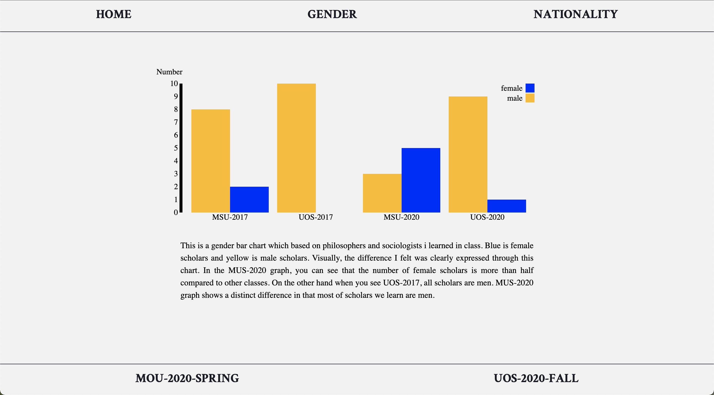

Most philosophy classes are centered around male philosophers,
and it is very common. However, when I take PHIL212_01SP20 class, it was conducted differently
from what I expected for granted, and the difference was not directly revealed in the text at the first time.
As the class progressed, I had planned to do a data project based on this particular class. And i
made an 'A point of view' project which based on PHIL212_01SP20 in 'Philosophy design' class.
For this project, I used data of two social philosophy classes which I took in 2020 (Philosophical Reflections
on Political Power of MUS and Philosophical Critique of the Modern Civil Society of UOS).
And for more reliable analysis, I used another data of social philosophy classes which I didn't take but had a class
in 2017 (The body politic of MUS and Philosophy of civic society of UOS )
All charts were made with D3.js. The bar charts were imported from
here
and the force charts were imported from here.
More detail is on the website below.
A point of view
#philosophy #society #gender #natioanlity
Data visualization, 2020
About
Personal project
